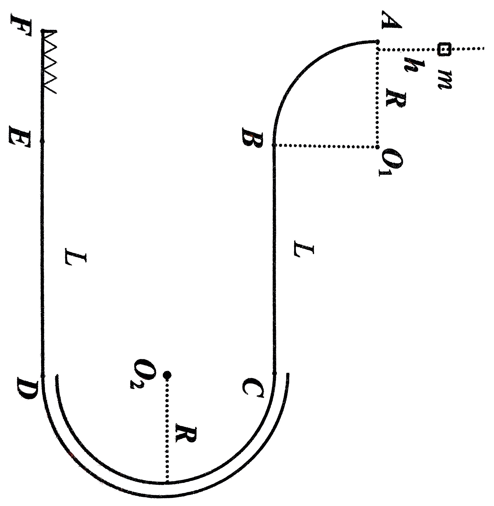
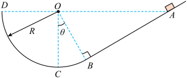
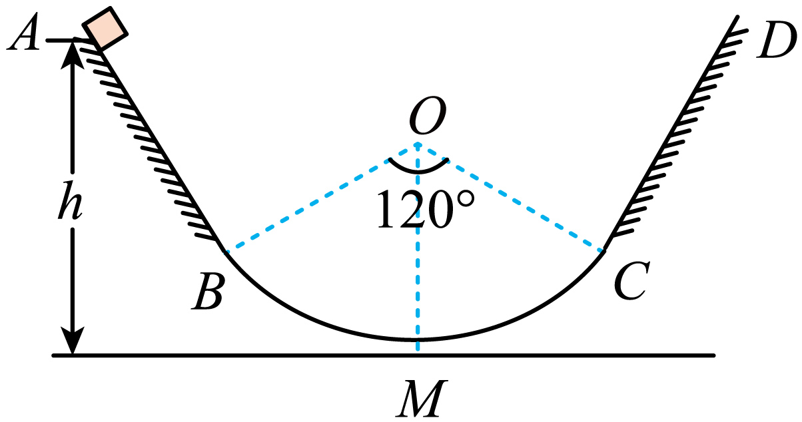
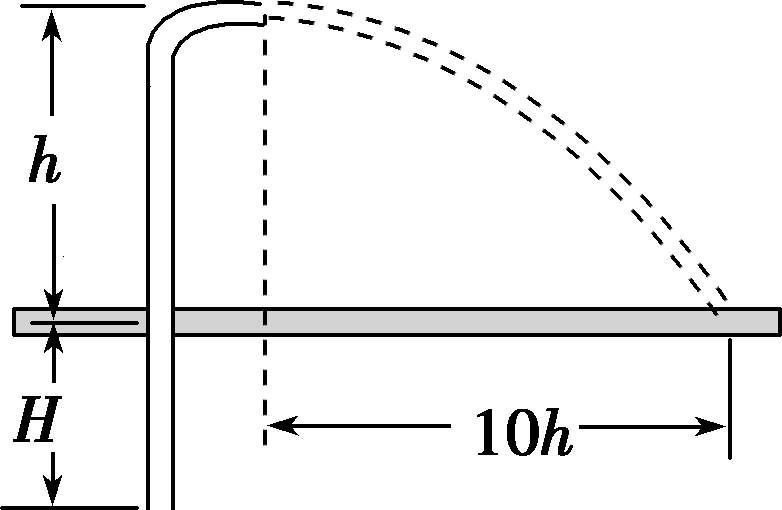

学考专题复习_动能定理应用
动能定理应用
三步走
- 定对象
- 定过程
- 列等式
练习
如图所示，在竖直平面内的轨道 ABCDEF 分别由光滑四分之一圆轨道 AB (半径 R)、粗糙水平直轨道 BC (长 L)、光滑半圆管道 CD (半径 R)、粗糙水平直轨道 DE (长 L)、光滑水平直轨道 EF 组成，各轨道间平滑连接，F 端固定有轻弹簧。已知，小滑块质量 m=0.1\;\mathrm{kg}，由 A 上方 h 处静止释放，它与两粗糙水平轨道间的动摩擦因数 \mu=0.5。已知 R=1\;\mathrm{m}，L=2\;\mathrm{m}，h=0.5\;\mathrm{m}，g 取 10 \;\mathrm{m /s^{2}}。
- 滑块第 1 次到 B 点时受到圆轨道 AB 的作用力的大小；
- 滑块压缩弹簧时弹簧的最大弹性势能；
- 滑块最终静止的位置；
- 若要滑块停在 BC 中点，求 h 的可能值。

问题 1
\begin{cases} mg(R+h)=\frac{1}{2}mv_{B}^{2} \\ F_{N}-mg=m\frac{v_{B}^{2}}{R} \end{cases} \Rightarrow F_{N}=m\left( g+\frac{2g(R+h)}{R} \right)=4\;\mathrm{N}
问题 2
根据动能定律列等式
mg(3R+h)-2\mu mgL + W_{弹}=0\Rightarrow W_{弹}=-1.5\;\mathrm{J}
弹力做负功，弹性势能增大。E_{弹}=1.5\;\mathrm{J}
问题 3
第二次抵达 D 点的动能记为 E_{k}'
mg(3R+h)-3\mu mgL=E_{k}'\Rightarrow E_{k}'=0.5\;\mathrm{J}
无法冲上半圆管道 CD，会返回到 D 点
E_{k}'=\mu mgl'\Rightarrow l'=1\;\mathrm{m}
问题 4
向左运动停在 BC 中点
mg(h+R)-\mu mg(3.5L+4nL)=0\Rightarrow h=(2.5+4n)\;\mathrm{m}
向右运动停在 BC 中点
mg(h+R)-\mu mg(4.5L+4nL)=0\Rightarrow h=(3.5+4n)\;\mathrm{m}
每多一次往复运动小滑块在水平轨道上多走的路程是 4L，多 n 次往复运动小滑块就多走 4nL
因此 h=(2.5+4n)\;\mathrm{m} 或 h=(3.5+4n)\;\mathrm{m}，其中 n=0,1,2,3\dots
练习
在竖直平面内的轨道 ABCD 分别由光滑四分之一圆轨道 AB 、CD (半径 R) 和粗糙水平直轨道 BC (长 L) 组成，各轨道间平滑连接。小滑块质量 m，由 A 上方 h 处静止释放，它与两粗糙水平轨道间的动摩擦因数为 \mu，已知 mgR<\mu mg\frac{L}{2}。
- 若要滑块停在 BC 中点，求 h 可能的值；
- 小滑块由 A 上方确定高度 h 处释放，求小滑块在 BC 上能够通过的路程 s。
问题 1
向右运动停在中点
mg(h+R)-\mu mg\left( \frac{L}{2}+2nL \right)=0
向左运动停在中点
mg(h+R)-\mu mg\left( \frac{3}{2}L+2nL \right)=0
问题 2
mg(h+R)-\mu mgs=0\Rightarrow s=\frac{h+R}{\mu}
练习
如图，竖直放置的斜面 AB 的下端与光滑的圆弧轨道 BCD 的 B 端相切，圆弧半径 R=0.8 \;\mathrm{m}，圆心与 A、D 在同一水平面上，\angle COB=30^{\circ}，现有一个质量 m=1.0 \;\mathrm{kg} 的小物体从斜面上的 A 点无初速滑下，已知小物体与斜面间的动摩擦因数为 \mu=0.2，求：
- 小物体在斜面上能够通过的路程；
- 小物体通过 C 点时，对 C 点的最大压力和最小压力。

问题 1
mgR\cos \theta-\mu mg\cos \theta s = 0 \Rightarrow s = \frac{R}{\mu}=4\;\mathrm{m}
问题 2
\begin{cases} mgR-\mu mg\cos \theta \frac{R}{\tan \theta} = \frac{1}{2}mv_{1}^{2} \\ N_{\mathrm{max}}-mg = m\frac{v_{1}^{2}}{R} \end{cases} \Rightarrow N_{\mathrm{max}}=24\;\mathrm{N}
\begin{cases} mgR-(1-\cos \theta) = \frac{1}{2}mv_{2}^{2} \\ N_{\mathrm{min}}-mg = m\frac{v_{2}^{2}}{R} \end{cases} \Rightarrow N_{\mathrm{min}}=(30-10\sqrt{ 3 })\;\mathrm{N}
练习
如图所示，AB 与 CD 为两个对称斜面，下部分别与一个光滑的圆弧面的两端相切，圆弧圆心角为 120°，半径 R=2\;m，A 点离圆弧底 M 点的高度为 h =4\;m，现将一个质量 m=1\;kg 的小物块从 A 点静止释放，若小物块与两斜面的动摩擦因数为 0.2，试求：
- 小物块第一次经过圆弧底 M 点时小物块的动能的大小；
- 最终小物块经过圆弧底 M 点时对圆弧的压力的大小；
- 小物块在两斜面上 (不包括圆弧部分) 一共能走多长路程。(g=10\;m/s^{2})

问题 1
B 点高度 h_{B}=1\;\mathrm{m}
斜面长 l 满足 h=l\sin 60^{\circ}+h_{B}\Rightarrow l=2\sqrt{ 3 }\;\mathrm{m}
根据动能定理列式
\begin{aligned} mgh-\mu mg\cos 60^{\circ}l=E_{k}-0 \\ \Rightarrow E_{k}=(40-2\sqrt{ 3 }) \;\mathrm{J} \end{aligned}
问题 2
\begin{cases} mgh_{B}=\frac{1}{2}mv_{M}^{2} \\ F_{N}-mg=m\frac{v_{M}^{2}}{R} \end{cases} \Rightarrow F_{N}=m\left( g+\frac{2gh_{B}}{R} \right)=2mg=20\;\mathrm{N}
问题 3
mg\Delta h-\mu mg\cos 60^{\circ}s=0\Rightarrow s=30\;\mathrm{m}
练习
如图所示的是推行节水灌溉工程中使用的转动式喷水龙头的示意图。“龙头”离地面高 h，将水水平喷出，其喷灌半径为 10 h，每分钟喷出水的质量为 m，所用的水从地面以下 H 深的井里抽取。设水以相同的速率喷出，所用水泵 (含电动机) 的效率为 \eta，不计空气阻力。求：
- 水从龙头中喷出时的速度 v；
- 水泵每分钟对水做的功 W；
- 带动该水泵的电动机消耗的电功率 P。
